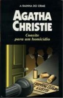

Convite para um Homicídio
A Murder is Announced
Nas pequenas aldeias costumam ocultar-se grandes paixões, capazes de cometer os piores crimes. No entanto, nessas enganosamente tranqüilas comunidades rurais também moram solteironas idosas, que, enquanto fazem croché, observam tudo, e podem valer mais do que mil policiais juntos. O exemplo mais extraordinário dessa classe de mulheres é Miss Marple, tão sagaz como Poirot e mais modesta do que ele. Defrontada a uma série de homicídios que começam com um assassinato anunciado — como se se tratasse de um jogo macabro — a simpática e bondosa Miss Marple, que sabe descobrir a maldade escondida sob as mais honestas e inocentes aparências desmascara o culpado, algo que não tinham conseguido fazer os investigadores profissionais mais experientes.
Marcelo Silva: Numa pequena comunidade um assassinato é anunciado num jornal local... Todos pensavam que era uma brincadeira mas um assassinato acontece de verdade no local marcado, que era uma casa que estava cheia de suspeitos... Quem poderia ser o verdadeiro culpado... Nenhum detetive foi capaz de descobrir mas uma velhinha tão esperta quanto Poirot mas mais modesta do que ele entra em ação... Nessa trama Miss Marple vai ter que desenterrar o passado dos suspeitos para descobrir o verdadeiro assassino. Ela fica numa corrida contra o tempo para que não aconteçam mais assassinatos...
Lidia Teresinha Campello: Nas pequenas aldeias costumam ocultar-se grandes paixões, capazes de cometer os piores crimes. No entanto, nessas enganosamente tranqüilas comunidades rurais também moram solteironas idosas, que, enquanto fazem croché, observam tudo, e podem valer mais do que mil policiais juntos. O exemplo mais extradinário dessa classe de mulheres é miss Marple, tão sagaz quanto Poirot e mais modesta do que ele. Defrontada a uma série de homicídios que começam com um assassinato anunciado — como se se tratasse de um jogo macabro — a simpática e bondosa miss Marple, que sabe descobrir a maldade escondida sob as mais honestas e inocentes aparências desmascara o culpado, algo que não tinham conseguido fazer os investigadores profissionais mais experientes.